src.operators¶
Methods related to the problem’s forward operator and Hilbert spaces.
The Hilbert spaces are implicitly defined via the functons in this module. A priory, these are numpy.ndarray of type complex objects, representing a finite dimensional complex space.
This module has certain global variables to be used by the defined methods.
These are set by src.DGCG.set_model_parameters()
Global variables¶
- test_funccallable
Function representing the kernel that defines the forward operator.
- grad_test_funccallable
Derivative function of test_func
- H_dimensionslist[int]
Dimensions of each of the considered Hilbert spaces.
Module Contents¶
Functions¶
|
Computes the Hilbert space product between two elements in |
|
Hilbert space product between a set of elements vs a single one. |
|
Time integral of two collections of elements in each Hilbert space. |
|
Evaluation of pre-adjoint forward operator of the inverse problem. |
|
|
|
Evaluation of forward operator of the inverse problem. |
|
Evaluation of forward operator of the inverse problem at all times. |
|
Overpenalization of the main inverse problem energy. |
|
The main energy to minimize by the inverse problem. |
-
src.operators.TEST_FUNC¶
-
src.operators.GRAD_TEST_FUNC¶
-
src.operators.H_DIMENSIONS¶
-
src.operators.H_t_product(t, f_t, g_t)¶ Computes the Hilbert space product between two elements in
H_t.H_trepresents the Hilbert space at timet. The implemented Hilbert space consists of the normalized real part of the complex dot product- Parameters
- tint
Index of the referenced time sample. Takes values in 0,1,…,T. With (T+1) the total number of time samples.
- f_t, g_tnumpy.ndarray
1-dimenisonal complex array representing an element of the Hilbert space at time
t, 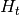.
- Returns
- float
Notes
The computed formula is
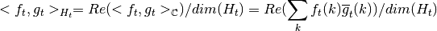
The Hilbert spaces must be real, meaning that the output of the inner product has to be a real number. In the implemented case here, we considered realified complex spaces.
-
src.operators.H_t_product_set_vector(t, f_t, g_t)¶ Hilbert space product between a set of elements vs a single one.
An extension for fast evaluation between groups of elements.
- Parameters
- tint
Index of the references time sample. Takes values in 0,1,…,T, where (T+1) the total number of time samples.
- f_tnumpy.ndarray
(N,K) shaped complex array representing a collection of
Nelements of the Hilbert space at timetwith dimensionK.- g_tnumpy.ndarray
1-dimensional complex array representing an element of the Hilbert space at time t .
- Returns
- numpy.ndarray
(N,1)-dimensional float array with
Nthe number of elements of the input collectionf_t.
-
src.operators.int_time_H_t_product(f, g)¶ Time integral of two collections of elements in each Hilbert space.
A time integral in this context corresponds to the time average. Therefore this method computes the time average of the Hilbert space inner products.
- Parameters
- f,glist[numpy.ndarray]
A list of size
T, where thet-thentry contains an element of the Hilbert space at timet, .
- Returns
- float
Notes
Precisely, the computed value is
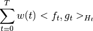
with 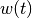 some weight at time
 , by default it is
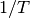, with
, by default it is
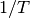, with  the total number of time samples.
To change the way the spaces are weighted in this integral, modify
the total number of time samples.
To change the way the spaces are weighted in this integral, modify
config.time_weights.
-
src.operators.K_t(t, f_t)¶ Evaluation of pre-adjoint forward operator of the inverse problem.
Defines/evaluates the preadjoint of the forward operator at time sample
tand elementfof the t-th Hilbert space. The preadjoint maps into continuous functions.- Parameters
- tint
Index of the considered time sample. Takes values from 0,1,…,T-1
- fnumpy.ndarray
1-dimensional complex array representing a member of the t-th Hilbert space
H_t.
- Returns
- callable[numpy.ndarray, numpy.ndarray]
function that takes (N,2)-sized arrays represnting
Npoints in the domain Ω, and returns a (N,1)-sized array.
Notes
The preadjoint at time sample
is a function that maps from the
Hilbert space to the space of continuous functions on the
domain 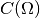. The formula that defines this mapping is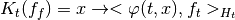
With
 the function
the function TEST_FUNCinput viasrc.DGCG.set_model_parameters.
-
src.operators.grad_K_t(t, f)¶
-
src.operators.K_t_star(t, rho)¶ Evaluation of forward operator of the inverse problem.
Evaluates the forward operator at time sample
tand measurerho. The forward operator at timetmaps into the t-th Hilbert spaceH_t.- Parameters
- tint
Index of the considered time sample. Takes values from 0,1,…,T, where (T+1) is the total number of time samples of the inverse problem.
- rho
src.classes.measure Measure where the forward operator is evaluated.
- Returns
- numpy.ndarray
1-dimensional complex array, representing an element of the t-th Hilbert space
H_t
Notes
The forward operator at time sample
is a function that maps
from the space of Radon measures 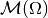 to the
-th Hilbert space . The input measure of class
src.classes.curveis a dynamic measure, that once evaluated at time, becomes a Radon Measure.The formula that defines this function is the following Bochner integral
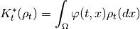
With
the function TEST_FUNCinput viasrc.DGCG.set_model_parameters.
-
src.operators.K_t_star_full(rho)¶ Evaluation of forward operator of the inverse problem at all times.
Evaluates the forward operator at all time samples and dynamic measure
rho. The output of this method is a list of elements inH_t.- Parameters
- rho
src.classes.measure Measure where the forward operator is evaluated.
- rho
- Returns
- list[numpy.ndarray]
T-sized list of 1-dimensional complex arrays, representing elements of the Hilbert spaces
H_t
Notes
For further reference, see
src.operators.K_t_star().
-
src.operators.overpenalization(s, M_0)¶ Overpenalization of the main inverse problem energy.
- Parameters
- s, M_0float
- Returns
- float
Notes
This function is the one applied to the Benamou-Brenier energy when defining the surrogate linear problem described in the paper. It is a 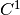 gluing of a linear and quadratic function.
-
src.operators.main_energy(rho, f)¶ The main energy to minimize by the inverse problem.
- Parameters
- measure
src.classes.measure Radon measure.
- flist[numpy.ndarray]
list of elements of the Hilbert spaces
H_t
- measure
- Returns
- float
Notes
Implements the formula
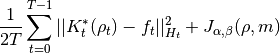
Where
 is the momentum, that is implicitly defined for sparse
measures as the ones used here.
is the momentum, that is implicitly defined for sparse
measures as the ones used here.